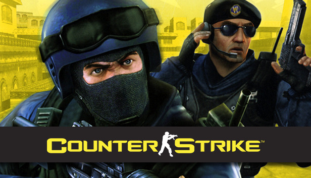

Counter-Strike 1.6
Counter-Strike 2

Counter-Strike 1.6 had a simpler graphical style, relying on the GoldSrc engine. In contrast, Counter-Strike 2 runs on the Source 2 engine, featuring improved lighting, physics, and dynamic smoke grenades.